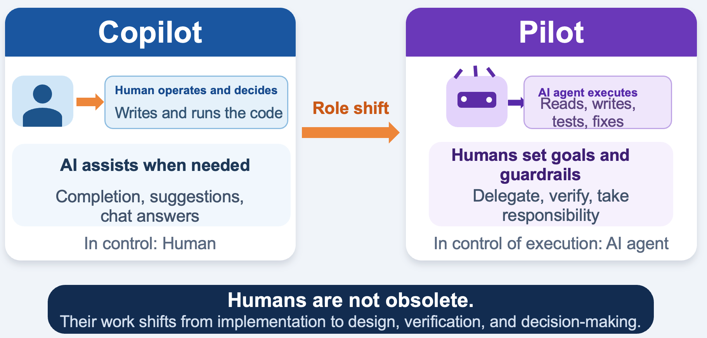

AI no longer just answers questions. It reads files, edits code and runs tests. In this course you will see that change with your own hands.
Start with an empty folder. Give the Coding Agent this one instruction.
Impressive. But would you submit this app as it is?
Look at the example again. The AI did not only write code. It created files, ran them, read the failure, fixed it and checked again.
Agentic AI is one way of using AI. You give it a goal. The AI plans the steps. It uses tools to carry them out. It looks at the result and decides what to do next.
A Coding Agent applies that idea to software development.
Here is the difference, using a bug fix as the example.
| Ordinary generative AI | Coding Agent | |
|---|---|---|
| You say | "How do I fix this error?" | "One test is failing. Fix it." |
| You get | A suggestion or a code sample | Fixed code and a test result |
| The AI does | Answers the question | Finds files, reads them, edits them, runs tests |
| You do | Apply the code and run it | State the goal, make the important calls, check the result |
The AI did not suddenly become capable of everything. What changed is that it can use tools. It reads files, runs commands, and feeds the result into its next move.
The same idea applies outside coding. Paperwork, support requests, cleaning up data. Part 8 does exactly this with video production.
This course still uses coding as its subject, for two reasons.
Tests do not prove that the code is correct. They check that the behaviour you asked for is still there.
AI can now carry out development work. This is not because the models write better prose. Three things had to come together first.
| Condition | What it made possible |
|---|---|
| Tool calling became reliable | The AI can state which operation to run, with which arguments, in a structured form |
| Context windows grew | It can keep several files and a work history in view across many steps |
| It connected to the editor | It can use the editor, the terminal, the tests and version control |
Together these changed what the AI can be used for. Not only a completion feature that suggests the next line, but an agent that carries out work within limits you set.

Now go back to the app at the top of this page. Could you really submit it?
Input validation may be missing. The data may not survive a restart. Something no test covers may already be broken.
Building fast and building correctly are different things. So the question becomes: where does a human decide, and what limits do you put in place?
This course is not about handing development over to AI. It is about deciding how much to hand over, and staying responsible for the result.
You will still be the one who says what "done" means, and who approves each change.
By the end, you should be able to do the following.
| What you do | ||
|---|---|---|
| Ex 0 | Find work worth delegating | Think, on paper. 20 minutes |
| Setup | Get the tools ready | VS Code, Ollama, a model, GitHub |
| 1 | How LLMs work, and where they fail | Reproduce the limits yourself |
| 2 | Try Vibe Coding | Rebuild a street scene with words only |
| 3 | Run a Coding Agent | Let Cline build a small app |
| 4 | Test it, then have it fixed | You find the problem. The agent fixes it |
| 5 | Turn the check into tests | Move it to Flask. Break it on purpose |
| 6 | Add features behind the tests | Two features, one of them unplanned |
| 7 | Build the agent yourself | Python, LangChain, LangGraph |
| 8 | Move the design to other work | A video production workflow |
Each part starts from what you built in the one before it. Working in order matters more here than in most courses.
Every part marks what is required and what is optional. You do not have to do all of it.